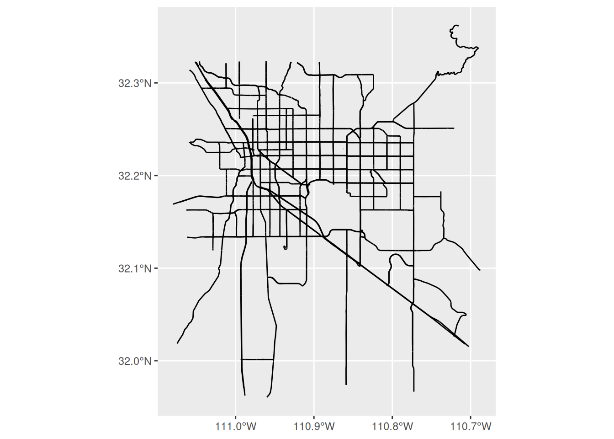
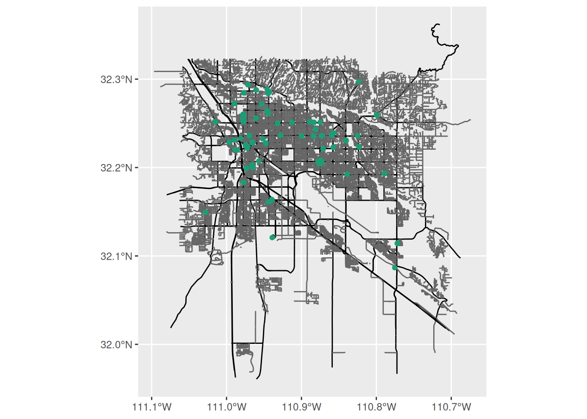
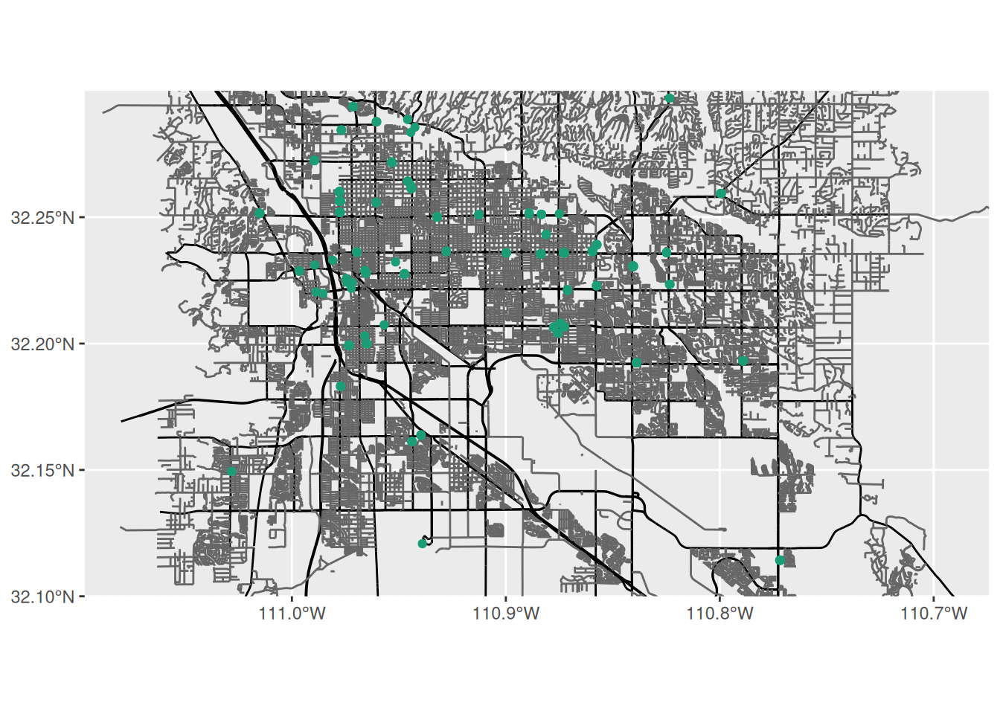
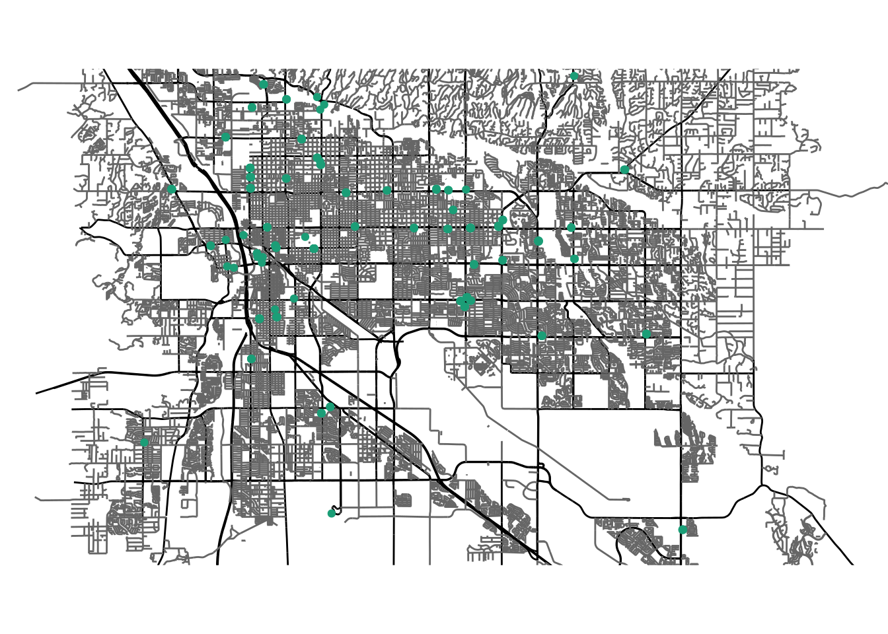
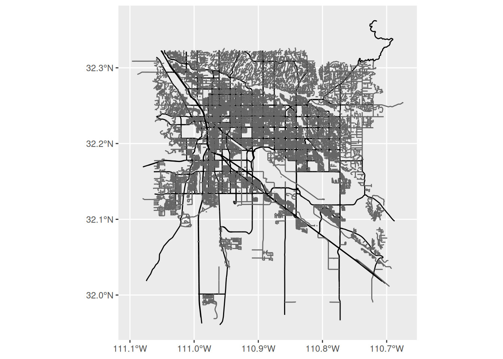
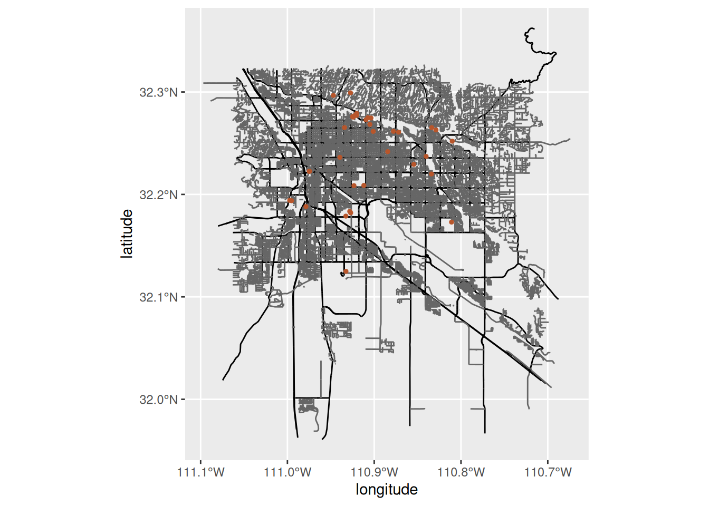
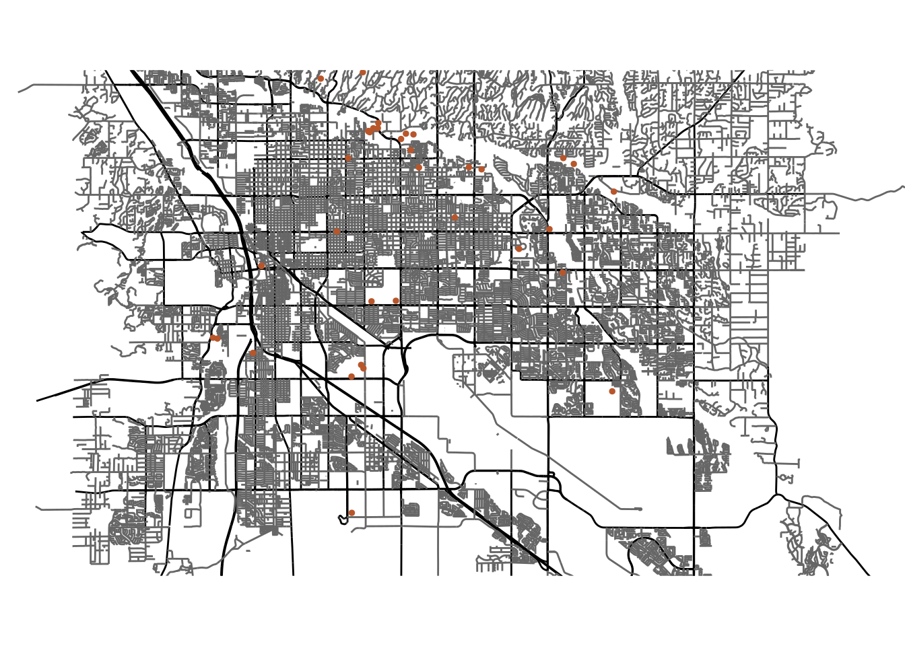

install.packages("osmdata") # For getting and working with OpenStreetMap data
install.packages("ggplot2") # For data visualization
install.packages("dplyr") # For chaining together OpenStreetMap commandsMapping with Open Street Maps in R
An introduction to working with Open Street Map data in R.
Learning objectives
- Install the osmdata R package
- Investigate data available from Open Street Maps
- Create a street map with restaurants in Tucson
- Create a street map with external data
OpenStreetMap is a source of several geographic data that you can use for analysis and visualization. The package osmdata allows you to work with those data through R. In this workshop, we will use osmdata and associated package to investigate OpenStreetMap data and use them for geographical visualization.
Getting started
We are going to be using the R language, with the RStudio IDE, so if you have not already installed those pieces of software, you can find download links for both at the installation page.
First we need to setup our development environment. Open RStudio and create a new project via:
- File > New Project…
- Select ‘New Directory’
- For the Project Type select ‘New Project’
- For Directory name, call it something like “osm-lesson” (without the quotes)
- For the subdirectory, select somewhere you will remember (like “My Documents” or “Desktop”)
The R software comes with lots of great features, but one of the best parts of R is that there are lots of add-ons that you can use. These are called “packages” and have to be explicitly installed to use them. The focus of today’s lesson is going to be the osmdata package, which lets us interface with OpenStreetMap data. We are also going to use some packages for visualizing our map, so we will install those, too. To install packages, we use the command install.packages(); you can type and run the two commands into the console in RStudio:
Interrogating OpenStreetMap data
When using packages like osmdata and dplyr, we have to take one additional step to actually use them. Whenever we want to use those packages, we need to load them explicitly with the library() command:
library(osmdata)
library(dplyr)Let’s start by looking at what kind of data are available through OpenStreetMap. I usually start with available_features() to see the top-level data organization:
# List the features of OSM data
available_features() [1] "traffic_sign" "trail_visibility" "trailblazed"
[4] "trailblazed:visibility" "trailer" "tunnel"
[7] "tunnel:name" "turn" "type"
[10] "unisex" "usage" "vehicle"
[13] "vending" "voltage" "water"
[16] "wheelchair" "wholesale" "width"
[19] "winter_road" "wood" (we are just seeing the last twenty entries, you will probably see something in the neighborhood of 230 different features.)
In the list that printed out, note there is one called “water”. We can look further into these features to see what kinds of water data are in OSM. We use the function available_tags() and ask for tags for a particular feature. In this case, we will look for the tags of those water features:
available_tags(feature = "water")# A tibble: 15 × 2
Key Value
<chr> <chr>
1 water basin
2 water canal
3 water ditch
4 water fish_pass
5 water lagoon
6 water lake
7 water lock
8 water moat
9 water oxbow
10 water pond
11 water reflecting_pool
12 water reservoir
13 water river
14 water stream_pool
15 water wastewater Note that not all features have attributes. For example, the feature “tunnel” has no additional attributes; when you run available_tags() on a feature without those additional attributes, the output will be character(0):
available_tags(feature = "tunnel")# A tibble: 1 × 2
Key Value
<chr> <chr>
1 tunnel yes If you want to take a deep dive into all the features, check out the OSM wiki page on map features.
But, what about maps?
Like any kind of data visualization, building maps is an interative process. Here we are going to start with defining the geographic area we are interested in then add features to that area.
Saving our work
So far, we have been working in the console, which is fine for anything we do not really care about saving. But from this point on, we want to keep a record of our work by adding all the code to a script file. To create a new script in RStudio, select File > New File > R Script. The script should open in the top-left pane of RStudio and really be a big, blank, white page. Here we will add our code, but we start with a little information about what the script does and who is responsible. This information is for humans, not R, so we start each of these lines with a pound sign (#, AKA the hashtag):
# Map Tucson restaurants
# Jeff Oliver
# jcoliver@arizona.edu
# 2022-03-28And you’ll add your name and e-mail (not my name and e-mail) in the appropriate lines. At the beginning of the script we also add calls to library() for any R packages that we will use later in the script. By putting this information at the top, anyone reading this script can see what other packages need to be installed.
# Map Tucson restaurants
# Jeff Oliver
# jcoliver@arizona.edu
# 2022-03-28
library(osmdata)
library(ggplot2)
library(dplyr)Now, to the maps!
Where are we going?
There are two ways we can define our geographic area of interest:
- Manually defining the latitude and longitude coordinates of a bounding box.
- Using OSM place names to automatically create the bounding box.
The first option gives you complete control over the bounding box, but the second option is much easier.
If you want to do it the first way, you create a 2x2 matrix with four values (min/max longitude and min/max latitude). In order to play nice with the osmdata package, we also name the columns and rows accordingly:
# A 2x2 matrix
tucson_bb <- matrix(data = c(-111.0, -110.7, 31.0, 32.3),
nrow = 2,
byrow = TRUE)
# Update column and row names
colnames(tucson_bb) <- c("min", "max")
rownames(tucson_bb) <- c("x", "y")
# Print the matrix to the console
tucson_bb min max
x -111 -110.7
y 31 32.3Now, control freaks like me might really like this approach, but the second option presents a much easier way:
# Use the bounding box defined for Tucson by OSM
tucson_bb <- getbb("Tucson")
# Print the matrix to the console
tucson_bb min max
x -111.05823 -110.70821
y 31.99041 32.32091This probably provides a better bounding box than my guesses at latitude and longitude, so we will use this second approach.
Roads? Where we’re going we…definitely need roads
We’ll start by adding roads to our map. For our purposes, we will have big roads and small roads. This is a pretty artificial distinction, but it works for our map. For the OSM data, we want to use data from the “highway” feature, so we start by looking to see what tags are available for that feature:
available_tags(feature = "highway")# A tibble: 57 × 2
Key Value
<chr> <chr>
1 highway bridleway
2 highway bus_guideway
3 highway bus_stop
4 highway busway
5 highway construction
6 highway corridor
7 highway crossing
8 highway cycleway
9 highway cyclist_waiting_aid
10 highway elevator
# ℹ 47 more rowsOkayyyyy, that’s a lot. We are going to just use a subset of those tags, but you can look at them all in depth on the OSM Wiki. We will start with just the major roads. We start by getting the bounding box for Tucson, then creating a query for the database with opq(), specifying which features we want with add_osm_feature(), and finally converting it to simple feature (sf) format with osmdata_sf().
tucson_major <- getbb(place_name = "Tucson") %>%
opq() %>%
add_osm_feature(key = "highway",
value = c("motorway", "primary", "secondary")) %>%
osmdata_sf()In the code above, we chain together multiple commands with the pipe operator (%>%). When you see the pipe, you can interpret this as the words “and then”. If we wrote this as pseudocode, it would read:
tucson_major <- get the bounding box for Tucson *and then*
prepare an OSM query *and then*
specify the types of highways to include *and then*
convert the data to sf formatAside: when querying OpenStreetMap for data, you may sometimes see an error message about “Request failed”:
Error in curl::curl_fetch_memory(url, handle = handle): HTTP/2 stream 0 was not closed cleanly: PROTOCOL_ERROR (err 1) Request failed [ERROR]. Retrying in 1 seconds…
In most cases when this happens, the osmdata package will automatically try to retrieve the data again. If it failed multiple times, wait a minute or two and try again. If you find it times out consistently, you can increase the time the query will wait for a response by passing timeout = 50 to the opq() function:
tucson_major <- getbb(place_name = "Tucson") %>%
opq(timeout = 50) %>%
add_osm_feature(key = "highway",
value = c("motorway", "primary", "secondary")) %>%
osmdata_sf()Looking at the tucson_major object, it provides a little information about the geographic extent and how many points, lines, and polygons are returned:
tucson_majorObject of class 'osmdata' with:
$bbox : 31.9904069,-111.0582298,32.3209098,-110.708206
$overpass_call : The call submitted to the overpass API
$meta : metadata including timestamp and version numbers
$osm_points : 'sf' Simple Features Collection with 27887 points
$osm_lines : 'sf' Simple Features Collection with 4614 linestrings
$osm_polygons : 'sf' Simple Features Collection with 2 polygons
$osm_multilines : NULL
$osm_multipolygons : NULLLet’s go ahead and plot what we have so far. Here we will be using the R package called ggplot2, which we installed and loaded earlier. If you have not already done that, load in the ggplot2 package via library(ggplot2).
# Create the plot object, using the osm_lines element of tucson_major
street_plot <- ggplot() +
geom_sf(data = tucson_major$osm_lines,
inherit.aes = FALSE,
color = "black",
size = 0.2)
# Print the plot
street_plot
You might see a warning about the projection:
Warning in CPL_transform(x, crs, aoi, pipeline, reverse, desired_accuracy, : GDAL Error 1: PROJ: proj_as_wkt: DatumEnsemble can only be exported to WKT2:2019
But we can ignore these warnings for now. Let us move on to retrieving data for the smaller roads. We use the same pipeline of defining the area, creating a query, then asking for the smaller road tags:
tucson_minor <- getbb(place_name = "Tucson") %>%
opq() %>%
add_osm_feature(key = "highway", value = c("tertiary", "residential")) %>%
osmdata_sf()To plot these smaller roads, we will just add them to the major roads plot we created already.
# Create the plot object, using the osm_lines element of tucson_minor
street_plot <- street_plot +
geom_sf(data = tucson_minor$osm_lines,
inherit.aes = FALSE,
color = "#666666", # medium gray
size = 0.1) # half the width of the major roads
# Print the plot
street_plot
There are some aesthetic changes we can make with this plot, such as zooming in a bit and getting rid of the gray background. But for now we will wait on those changes and pivot to adding other kinds of data to the map.
The best 23 miles of Mexican food
We in Tucson are proud of our restaurants, especially the diversity of cuisines coming from our neighbors to the south. For the next step of our map, we want to add points for all the restaurants in Tucson that specialize in Mexican cuisine. To do this, we will start by retrieving data for all restaurants in that Tucson bounding box that we created earlier on.
# Query for Tucson restaurants
tucson_rest <- getbb(place_name = "Tucson") %>%
opq() %>%
add_osm_feature(key = "amenity", value = "restaurant") %>%
osmdata_sf()Like we did before, we can get a snapshot of results by typing in the name of the object into the console:
tucson_restObject of class 'osmdata' with:
$bbox : 31.9904069,-111.0582298,32.3209098,-110.708206
$overpass_call : The call submitted to the overpass API
$meta : metadata including timestamp and version numbers
$osm_points : 'sf' Simple Features Collection with 2156 points
$osm_lines : NULL
$osm_polygons : 'sf' Simple Features Collection with 286 polygons
$osm_multilines : NULL
$osm_multipolygons : NULLThese data are points, and there are over 2,000 of them! We want to limit this to only those restaurants specializing in Mexican cuisine. We can update our previous query by adding another call to add_osm_feature(), this time setting key = cuisine and value = "mexican":
# Query for Tucson restaurants, them filter to mexican cuisine
tucson_rest <- getbb(place_name = "Tucson") %>%
opq() %>%
add_osm_feature(key = "amenity", value = "restaurant") %>%
add_osm_feature(key = "cuisine", value = "mexican") %>% # filters results
osmdata_sf()And we should see the number of points reduced to a little over 200:
tucson_restObject of class 'osmdata' with:
$bbox : 31.9904069,-111.0582298,32.3209098,-110.708206
$overpass_call : The call submitted to the overpass API
$meta : metadata including timestamp and version numbers
$osm_points : 'sf' Simple Features Collection with 350 points
$osm_lines : NULL
$osm_polygons : 'sf' Simple Features Collection with 46 polygons
$osm_multilines : NULL
$osm_multipolygons : NULLNow that we have those points, we can create a street map and add those points onto the map. We are going to start with the street_plot object we created earlier, and add in the points on top of the street data.
# Create a new plot object, starting with the street map
rest_plot <- street_plot +
geom_sf(data = tucson_rest$osm_points,
inherit.aes = FALSE,
size = 1.5,
color = "#1B9E77") # approximately "elf green"???
# Print the plot
rest_plot
Nice! Now we’re getting there. Earlier we mentioned that there were some aesthetic changes we want to make. Specifically, we want to zoom in a little bit (we do not need the map to extend so far south) and we want to remove the gray background. For the zooming, we can limit the y-axis extent with the coord_sf() function:
# Create a new plot object, starting with the street map
rest_plot <- street_plot +
geom_sf(data = tucson_rest$osm_points,
inherit.aes = FALSE,
size = 1.5,
color = "#1B9E77") +
coord_sf(ylim = c(32.1, 32.3), # Crop out southern part of map
expand = FALSE) # if we don't set, will expand to fit data
# Print map
rest_plot
And to drop the gray background, we use one of the built-in themes. In this case, we add theme_void() at the very end of our map:
# Create a new plot object, starting with the street map
rest_plot <- street_plot +
geom_sf(data = tucson_rest$osm_points,
inherit.aes = FALSE,
size = 1.5,
color = "#1B9E77") +
coord_sf(ylim = c(32.1, 32.3), # Crop out southern part of map
expand = FALSE) + # if we don't set, will expand to fit data
theme_void() # remove gray background
# Print map
rest_plot
One thing to point out with this map is that the features we are using require a fair bit of curation to get to the level of detail we are asking for (Tucson amenities that are restaurants that serve Mexican cuisine). Because of this, the data may not be complete. Maybe when you’re visiting Tucson you can contribute to the OSM project by adding a Mexican restaurant that isn’t on the map we made?
Putting the “Open” in OpenStreetMaps
You are not restricted to only using OpenStreetMap data for these maps. You can add just about any other georeferenced data you would like. Here we are going to take that Tucson street map and add observations of one of our local birds, Harris’ Hawk. The observations come from the iNaturalist community science project. I already downloaded a subset of the observations from the Tucson vicinity, and you can read them into memory with the read.csv() function, then look at the first few rows of data with the head() command:
# Read Harris' Hawk observations (source: iNaturalist) into memory from online
hh_obs <- read.csv(file = "https://bit.ly/hh-obs")
# Print out first six rows of data
head(hh_obs) id latitude longitude scientific_name taxon_id
1 4681128 32.23620 -110.9395 Parabuteo unicinctus 5355
2 5393591 32.26524 -110.8337 Parabuteo unicinctus 5355
3 7446943 32.26152 -110.9011 Parabuteo unicinctus 5355
4 11438600 32.18819 -110.9787 Parabuteo unicinctus 5355
5 14964774 32.22261 -110.9747 Parabuteo unicinctus 5355
6 18816462 32.19418 -110.9974 Parabuteo unicinctus 5355We see that there are longitude and latitude columns, so we will need to use those for specifying our x and y coordinates, respectively. We start by making a new plot object from our street_plot
hawk_plot <- street_plot
hawk_plot
Well, not so exciting yet because we haven’t added those observations to our map object. For these data, we will use geom_point(), since they are just x,y coordinates, not simple (or spatial) features. Because of this, we will need to explicitly state which column in our data correspond to the horizontal dimension (i.e. the x-axis) and which column corresponds to the vertical dimension (i.e. the y-axis). We do this with the mapping argument. Aside: yes, this might be confusing. Here we are “mapping” data to part of our plot - it doesn’t have anything to do with a map per se (we use the mapping argument for all kinds of plots, not just maps). It is just one “fun” part of the flexibility of the English language.
hawk_plot <- street_plot +
geom_point(data = hh_obs,
mapping = aes(x = longitude, y = latitude),
color = "#B8562B", # an orange to match the species' shoulders
size = 1,
inherit.aes = FALSE)
hawk_plot
OK! Hawks on the north side of town, but our map has that gray background again and extends too far south. We need to crop the y-axis again and use theme_void() to remove the background:
hawk_plot <- street_plot +
geom_point(data = hh_obs,
mapping = aes(x = longitude, y = latitude),
color = "#B8562B", # an orange to match the species' shoulders
size = 1,
inherit.aes = FALSE) +
coord_sf(ylim = c(32.1, 32.3),
expand = FALSE) +
theme_void()
hawk_plot
And now we have our map! Finally (why didn’t we cover this before?), we can output the map to a file with the ggsave() command. We just need to tell R two things:
- Which plot do we want to save?
- Where do we want to save the plot?
ggsave(plot = hawk_plot,
filename = "harris-hawk-tucson.png")Note in the case above, R will guess the file type from the extension we use in our file name. We could write to a PDF instead by using the .pdf file extension:
ggsave(plot = hawk_plot,
filename = "harris-hawk-tucson.pdf")We really just scratched the surface of OpenStreetMap data. Take a look at the additional resources section below to find out more about features and other ways to use OSM data with R.
Additional resources
- The osmdata package on GitHub
- The OSM Wiki page
- The wiki page on map features
- A tutorial on osmdata mapping roads in Asheville, NC
- An example mapping movie theaters in Spain
- A PDF version of this lesson